Naturalidade e elegância em cada detalhe
Um olhar individualizado para valorizar sua beleza e respeitar aquilo que faz você ser única.
- Cirurgiã-dentista, CRO-MG 62571
- Carmo da Cachoeira e Varginha
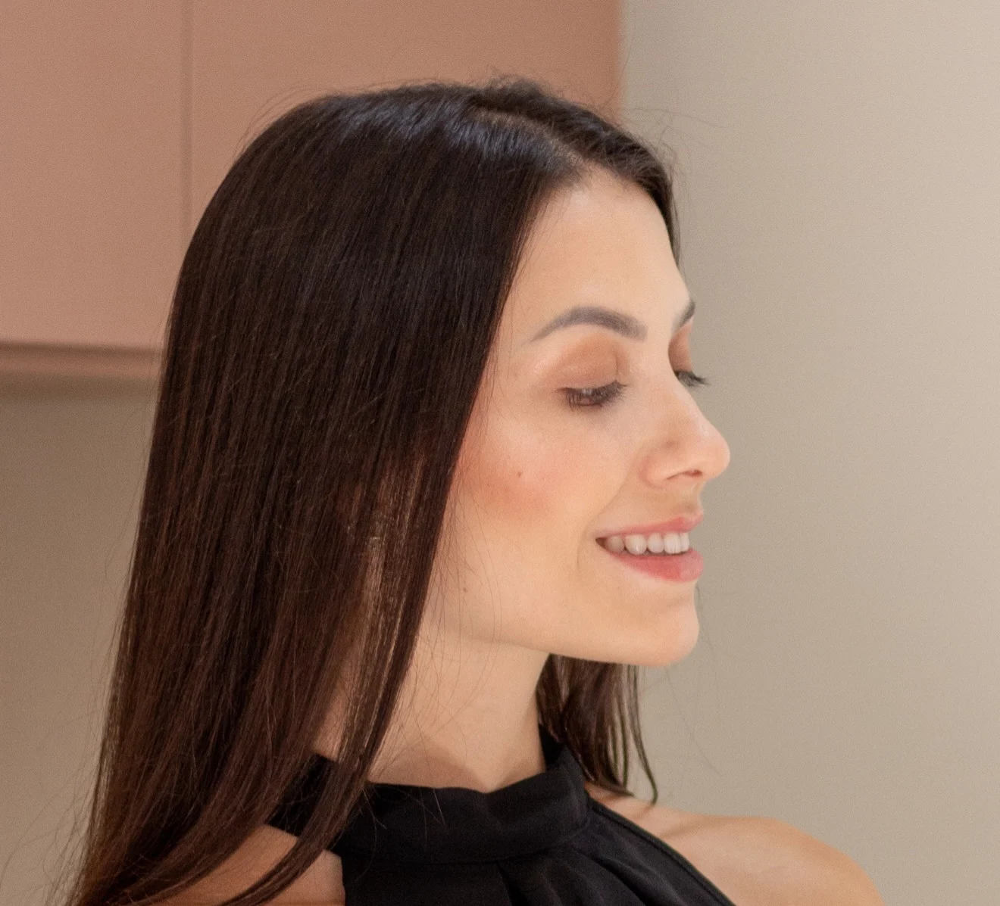
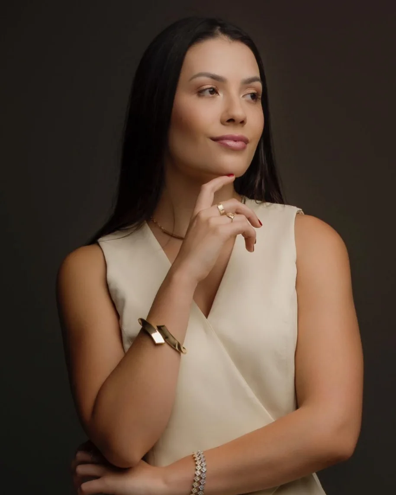
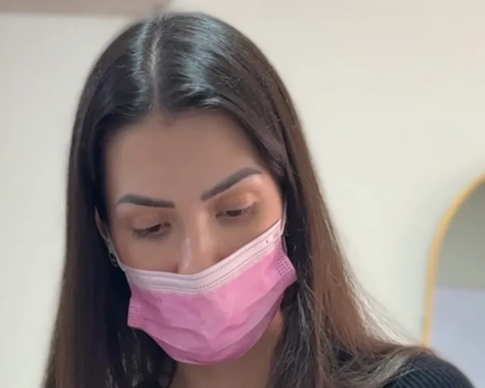
O cuidado começa pela escuta
A Dra. Ana Cláudia Reis é cirurgiã-dentista e atende em Carmo da Cachoeira, Varginha e região, com foco em odontologia estética e harmonização facial.
Antes de falar em procedimento, ela quer entender o que você gosta no seu rosto, o que incomoda e o que espera. A proposta é cuidar dos detalhes sem apagar seus traços: um resultado que pareça você.
- Profissão
- Cirurgiã-dentista
- Registro
- CRO-MG 62571
- Áreas
- Odontologia estética, harmonização facial e endodontia
- Atendimento
- Carmo da Cachoeira, Varginha e região
Beleza não é transformação.
É potencialização.
Precisão, planejamento e constância
Cada rosto tem proporções, expressões e uma história próprias. O atendimento parte disso, e não de uma fórmula pronta.
Precisão
Naturalidade não está na quantidade de produto, mas na precisão de onde e como ele é aplicado.
Planejamento
Fazer o rosto entrar em harmonia, com estratégia. Você conhece as opções e os limites de cada uma, e decide junto.
Constância
Cuidar não é urgência, é constância: um plano que faz sentido para a sua rotina e fase de vida.
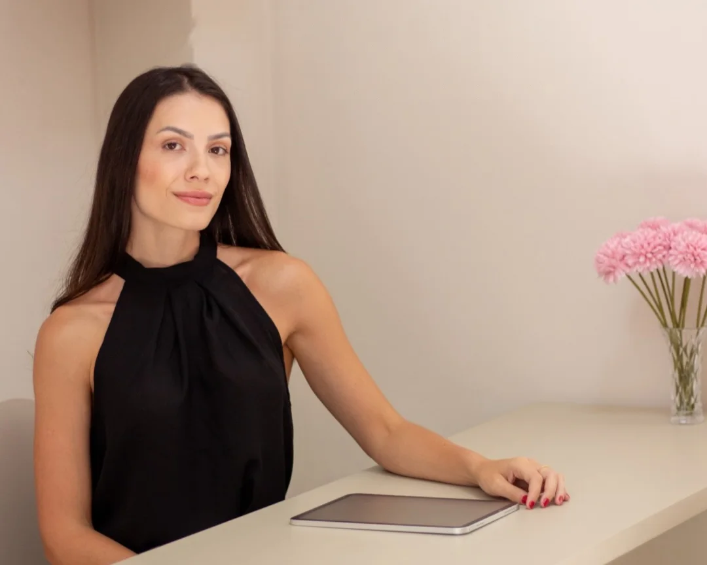
Tratamentos
A harmonização facial reúne procedimentos planejados em conjunto, para equilibrar as proporções do rosto respeitando seus traços. A indicação de cada um depende da avaliação presencial.
Lábios e perfil
Preenchimento labial
Ácido hialurônico para os lábios ganharem contorno, hidratação e volume na medida certa.
Rinomodelação
Ajuste do perfil do nariz com ácido hialurônico, sem cortes e sem cirurgia. Indicação definida na avaliação.
Perfiloplastia
O perfil tem três pontos principais: nariz, lábios e mento. Quando existe equilíbrio entre eles, o perfil entra em harmonia. Sem cortes e sem cirurgia.
Rosto e pele
Toxina botulínica (botox)
Suaviza a contração de músculos ligados a algumas linhas de expressão. Pontos e dose são definidos para o seu rosto.
Reestruturação facial
Preenchimento com ácido hialurônico para devolver suporte e contorno, planejado a partir das proporções do rosto.
Bioestimuladores de colágeno
Estimulam a produção de colágeno pelo próprio organismo, para melhorar a firmeza e a qualidade da pele com o tempo.
Protocolos para a pele
Cuidados para textura e viço da pele, combinados com o restante do plano de tratamento.
A avaliação define o que faz sentido para você.
Resultados
Pacientes atendidas pela Dra. Ana Cláudia Reis, com imagens publicadas com autorização. Cada rosto responde de um jeito: o resultado depende da avaliação e do plano individual.
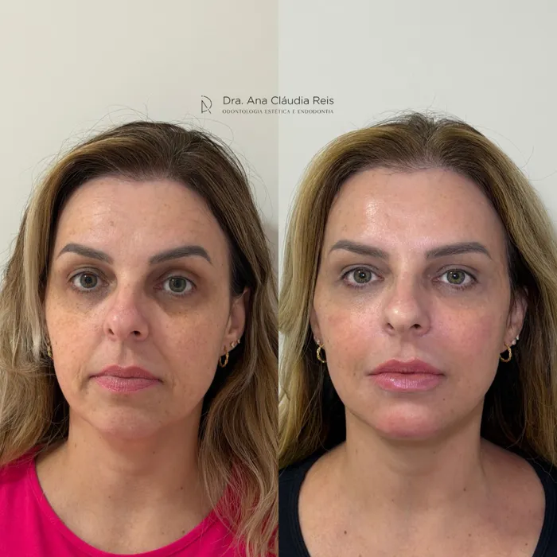
(ampliar em nova aba)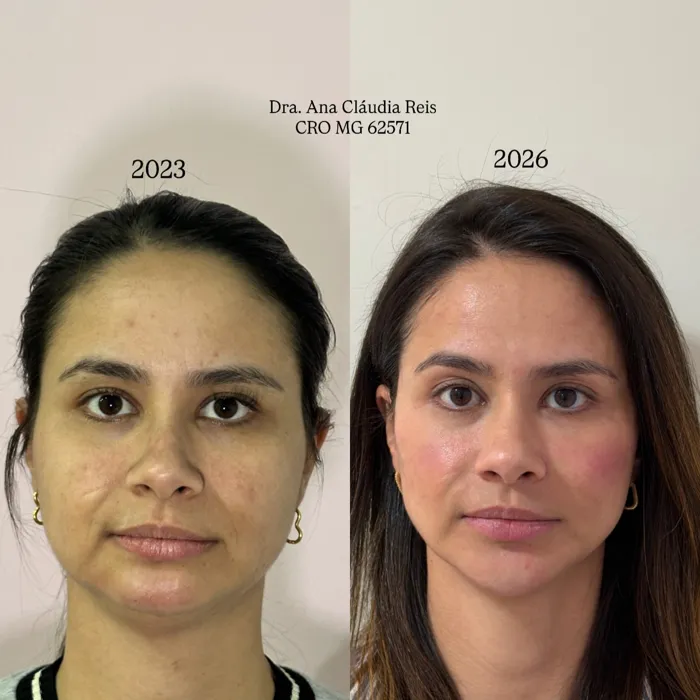
(ampliar em nova aba)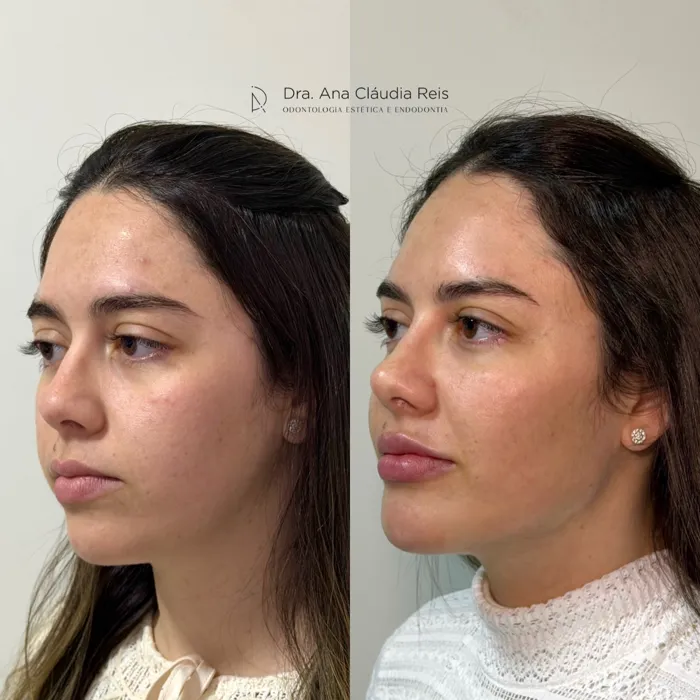
(ampliar em nova aba)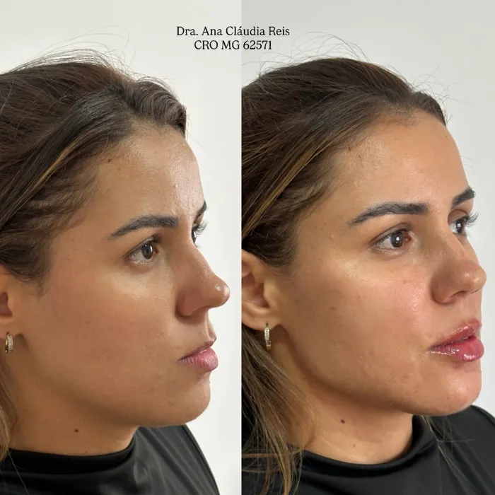
(ampliar em nova aba)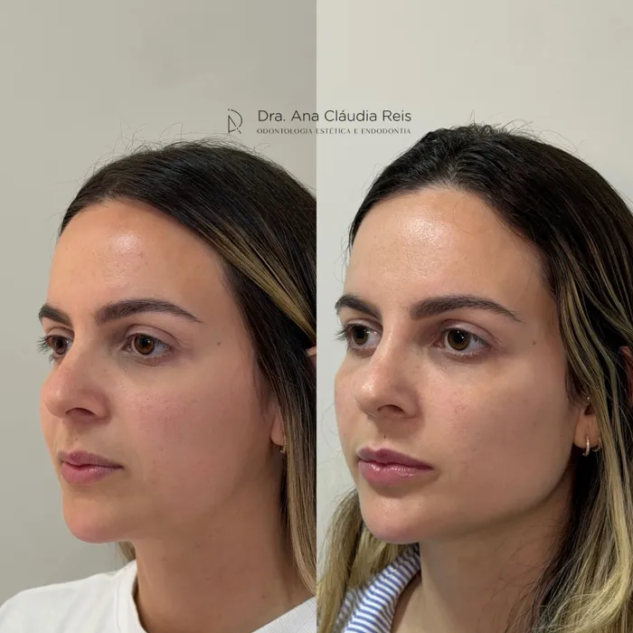
(ampliar em nova aba)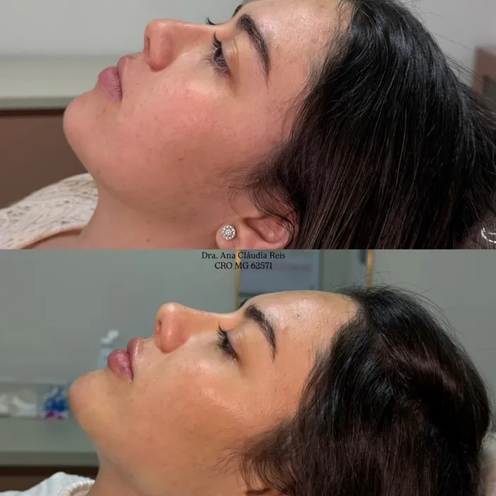
(ampliar em nova aba)
Toque numa foto para ver em tamanho maior.
Como funciona
Do primeiro contato às orientações depois do procedimento.
-
Contato
Você envia uma mensagem contando o que gostaria de avaliar e em qual cidade prefere ser atendida.
-
Agendamento
Vocês combinam data, horário e local da consulta.
-
Consulta de avaliação
Conversa, análise do rosto e do histórico de saúde. Se houver indicação, você conhece as opções e seus limites.
-
Orientações
Você recebe as orientações de cuidado e sabe o que esperar nos dias seguintes a qualquer procedimento.
Um bom resultado não chama atenção para o procedimento. Ele traz mais harmonia, sem que ninguém perceba o que foi feito.
Dúvidas frequentes
Não encontrou sua dúvida? Mande uma mensagem pelo Instagram.
Preciso de avaliação antes de um procedimento?
Sim. A indicação depende da avaliação presencial, que também é o momento de tirar dúvidas e decidir com calma.
O resultado fica natural?
Esse é o objetivo do planejamento: harmonia, e não transformação. A quantidade e o local de cada aplicação são definidos para valorizar seus traços.
A rinomodelação e a perfiloplastia têm cortes?
Não. São feitas com ácido hialurônico, sem cortes e sem cirurgia. A indicação é definida na avaliação.
Como faço para agendar?
Envie uma mensagem pelo Instagram @draanaclaudiareis_ dizendo o que gostaria de avaliar e em qual cidade prefere ser atendida.
Onde é o atendimento?
Em Carmo da Cachoeira e em Varginha. Endereços e horários são informados pelo Instagram.
Como me preparar para a consulta?
Leve a lista de medicamentos que usa e conte sobre alergias, condições de saúde e procedimentos estéticos que já fez.
Dentista pode fazer harmonização facial?
Sim. A harmonização orofacial faz parte da atuação do cirurgião-dentista e é regulamentada pelo Conselho Federal de Odontologia.
Acompanhe no Instagram
@draanaclaudiareis_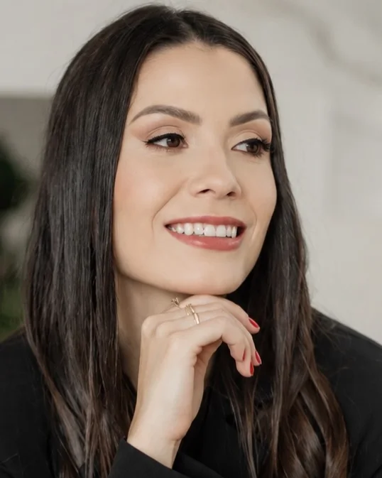
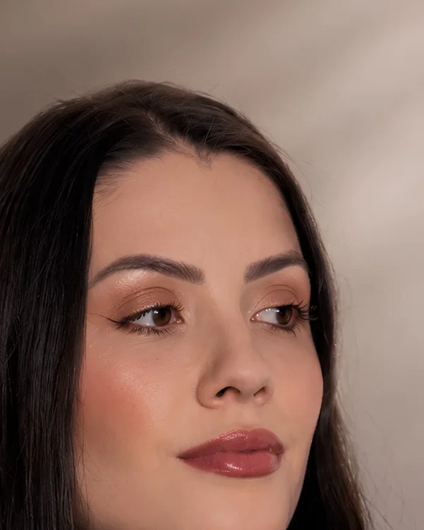
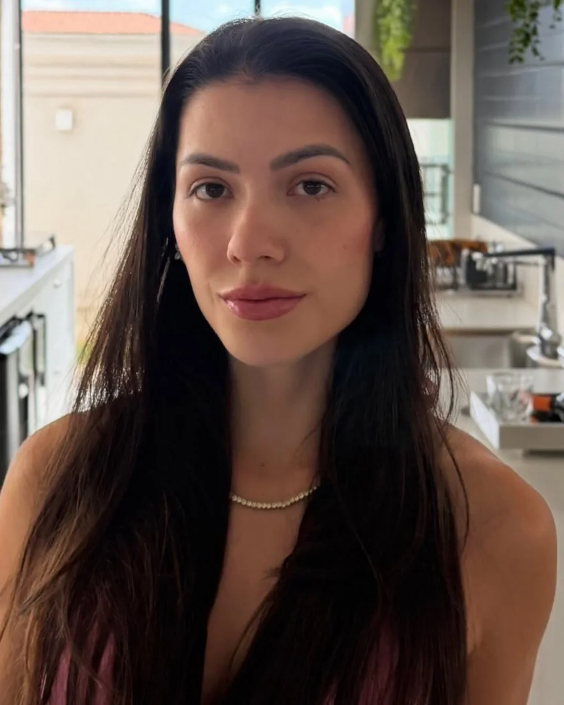
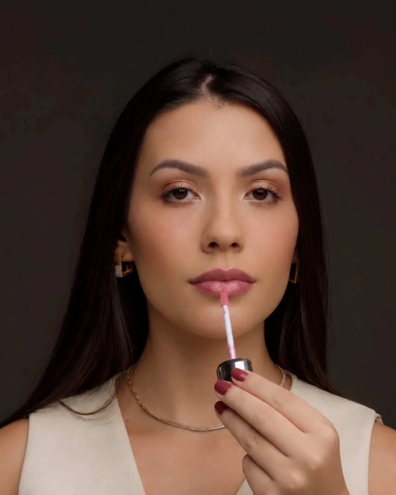
Agende sua avaliação
Conte o que gostaria de avaliar e em qual cidade prefere ser atendida. Não é preciso enviar dados de saúde por mensagem.
Carmo da Cachoeira
Endereço e horários pelo Instagram
Varginha
Endereço e horários pelo Instagram